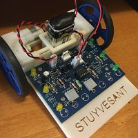
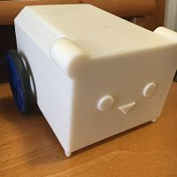
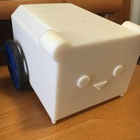

PORTFOLIO
Northeastern University


Research Assistant & Assistant Software Developer:
The Digilab Celljet is a 3D printer capable of printing live cells. The goal of the project is to generate viable 3D constructs of living cells. Currently, the Celljet is controlled using G-Code, and has built in software, but the software does not allow for easy user input and generation of 3D models. Improvements that will allow the software to easily convert 3D CAD models to discrete printable points that the CellJet will then use to print biologic material layer by layer is necessary, and was my main focus of the project. The objectives for this project were broken down into different milestones. The first milestone is the creation of a procedure to convert basic 3D structure to discrete, printable points that can be integrated with the current program. The next stage of this project will be integrating the software into the cell jet with common G-code software available. The last milestone of the project is the creation of a software package that integrates 3D modeling and accommodates for biological printing of live cells. We expect to be able to build software that is compatible with the software from Digilab that allows the user to easily build a 3D biological model using live cells.
More information about this project is avaliable here
More information about this project is avaliable here
Worcester Polytechnic Institute (WPI)


Research Assistant:
The use of smart control devices such as magnetorheological (MR) dampers to reduce structural response and to mitigate structural damage was studied in this research, and my focus on the project was on the location optimization of the MR dampers. A scaled down bridge pier and MR damper system was designed, built, and set up in the lab for impact testing. Impact drop tests were then conducted to stimulate a real highway impact with a bridge. In order to optimize the effectiveness of the MR dampers in mitigating structural displacement and/or accelerations, tests were conducted to determine the optimal location for the dampers. I created MATLAB code to analyze the results of the tests, and created graphs of the structural response reduction due to dampers on Excel to compare the effectiveness of the different combinations of dampers. I also
wrote a research paper to be used as a foundation for journal publication, and I
created a poster of my work to present to professors and graduate students.
{kind=link}
Stuyvesant High School





Line Tracing Autonomous Robot:
This was one of the first projects that I worked on, and is what made me develop a passion for robotics. I designed the bear model as a cover for the robot using mechanical desktop, and built it using a 3D printer. I also soldered electrical components, and worked with different electronic components such as photoresistors and motors, which is what allows the robot to follow the line. In the first video clip, the robot is programmed to move towards the light, whereas in the second video clip, the robot is programmed to move towards the dark line.
Other Projects
Sorting Colored Ping Pong Balls
I used C++ to program a sorting apparatus to sort a stack of colored Ping-Pong balls. There are three main components to the sorting apparatus: the camera, the stepper motor, and an actuator. The camera is used to identify the color of the ping pong ball.It first captures an image of the ball, and then downloads the picture as an array of numbers. The numbers are then converted to a matrix, broken down to RGB values, and finally converted to HSV values.The stepper motor is used to rotate to the appropriate receptacle, which was done by figuring out the angle that the motor needed to move in order for the correct receptacle to line up with the tube. Last but not least, the actuator is used to release one ball from the stack of ping pong balls. The actuator is controlled by an electric current from a controlled power source, and by turning the voltage on and off, the actuator is able to release a ping pong ball from the stack.
Unfortunately, I did not record my project, but a video of another group's project is online, and avaliable to watch here
Unfortunately, I did not record my project, but a video of another group's project is online, and avaliable to watch here
Maze Solving Robot
This was my first introduction to robotics. I worked on programming, designing, and constructing a robot that could solve a maze. This included edge detection, obstacle detection, and light detection. The robot had sensors placed on it so that if it got too close to the edge, it knew to back up. Whiskers were used to help with obstacle detection. If the left whisker bumped into something on the maze, the robot would then back up, and turn right. Likewise, if the right whisker bumped into something on the maze, the robot would then back up and turn left. This also made the robot capable of escaping if it were to be stuck in a corner. Lastly, photosensors were placed on the robot to help it detect light, so that the robot would travel into a dark box, which was the end point on the maze.
Skills
MATLAB, Python (MIT certified) , C++, AutoCAD, SolidWorks, OrCAD, Mechanical Desktop, CADKEY, LabVIEW, Microsoft Office
{kind=link}